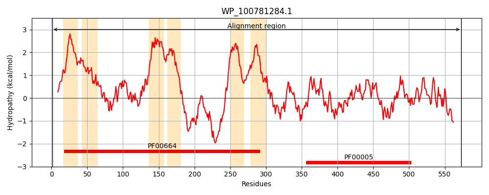
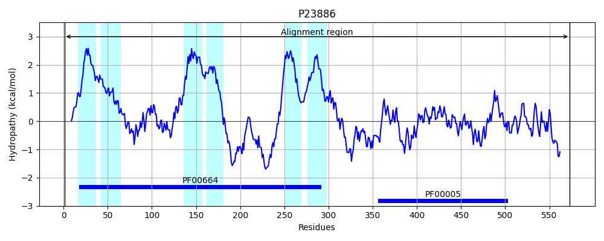
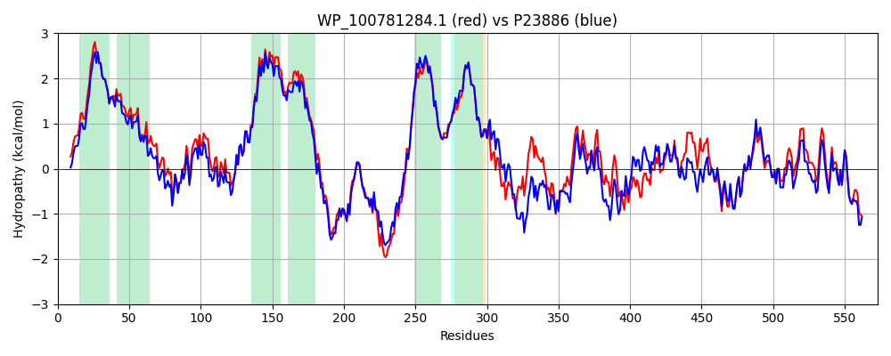

Hit Accession: P23886
Hit TCID: 3.A.1.129.1
Hit Description: gnl|BL_ORD_ID|9462 gnl|TC-DB|P23886|3.A.1.129.1 Transport ATP-binding protein cydC - Escherichia coli.
Mach Len: 573
e:0.000000
Query TMS Count : 6
Hit TMS Count: 6
TMS-Overlap Score: 6.450000
Predicted Substrates:CHEBI:5437;glutathione, CHEBI:4050;cysteine
BLAST Alignment:
Score: 2410 , Bit scores: 932 bits, E-value: 0.0e+00, Alignment length: 573, Percentage identity: 83
Query: 1 MRALLPYLALYKRHKWMLLLGVVLAIVTLLASIGLLTLSGWFLSASAVVGVAGIYSFNYMLPAAGVRGAAIIRTAGRYFERLVSHDATFRVLQHLRVFTFSKLLPLSPAGLARFRQGELLNRVVADVDTLDHLYLRVISPLVGALVVIVVVTCGLSLLDVTLALTLGGIMLVTLLVMPPLFYRAGKPAGESMTQLRGQYRQQLTAWLQGQAELMVFNASDRYRAQMEKTELSWQDAQRRQAELTALSQAVMLLIGGIAVVAMLWLASAGIGGNSQPGALIALFVFCALAAFEALAPVTGAFQHLGQVIASARRISQITDQQPEVTFVEGEASVPAQVALTFRQVTFRYPHQPSPALENISLQIAAGEHIAILGRTGCGKSTLLQLLTRAWDPTQGEILLNDQPLSQLSEATLRQTMSVVPQRVHLFSATLRDNLLLAAPDADDTALCAILEKVGLEKLLEDGGLNSWLGEGGRQLSGGELRRLAIARALLHDAPLMLLDEPTEGLDAATESQILHLLAEVMREKTVLVVTHRLRGLARFNQIIVMDNGQIIEQGSHADLLAKQGRYFQFKQRL 573
MRALLPYLALYKRHKWML LG+VLAIVTLLASIGLLTLSGWFLSASAV GVAG+YSFNYMLPAAGVRGAAI RTAGRYFERLVSHDATFRVLQHLR++TFSKLLPLSPAGLAR+RQGELLNRVVADVDTLDHLYLRVISPLVGA VVI+VVT GLS LD TLA TLGGIML+TL +MPPLFYRAGK G+++T LRGQYRQQLTAWLQGQAEL +F ASDRYR Q+E TE+ W +AQRRQ+ELTALSQA+MLLIG +AV+ MLW+AS G+GGN+QPGALIALFVFCALAAFEALAPVTGAFQHLGQVIASA RIS +TDQ+PEVTF + + V +V+LT R V F YP Q AL+ ISLQ+ AGEHIAILGRTGCGKSTLLQ LTRAWDP QGEILLND P++ L+EA LRQT+SVVPQRVHLFSATLRDNLLLA+P + D AL IL +VGLEKLLED GLNSWLGEGGRQLSGGELRRLAIARALLHDAPL+LLDEPTEGLDA TESQIL LLAE+MREKTVL+VTHRLRGL+RF QIIVMDNGQIIEQG+HA+LLA+QGRY+QFKQ L
Sbjct: 1 MRALLPYLALYKRHKWMLSLGIVLAIVTLLASIGLLTLSGWFLSASAVAGVAGLYSFNYMLPAAGVRGAAITRTAGRYFERLVSHDATFRVLQHLRIYTFSKLLPLSPAGLARYRQGELLNRVVADVDTLDHLYLRVISPLVGAFVVIMVVTIGLSFLDFTLAFTLGGIMLLTLFLMPPLFYRAGKSTGQNLTHLRGQYRQQLTAWLQGQAELTIFGASDRYRTQLENTEIQWLEAQRRQSELTALSQAIMLLIGALAVILMLWMASGGVGGNAQPGALIALFVFCALAAFEALAPVTGAFQHLGQVIASAVRISDLTDQKPEVTFPDTQTRVADRVSLTLRDVQFTYPEQSQQALKGISLQVNAGEHIAILGRTGCGKSTLLQQLTRAWDPQQGEILLNDSPIASLNEAALRQTISVVPQRVHLFSATLRDNLLLASPGSSDEALSEILRRVGLEKLLEDAGLNSWLGEGGRQLSGGELRRLAIARALLHDAPLVLLDEPTEGLDATTESQILELLAEMMREKTVLMVTHRLRGLSRFQQIIVMDNGQIIEQGTHAELLARQGRYYQFKQGL 573 | Protein Hydropathy Plots: |
|---|
|  |  |
Pairwise Alignment-Hydropathy Plot:
|
|---|
|  |